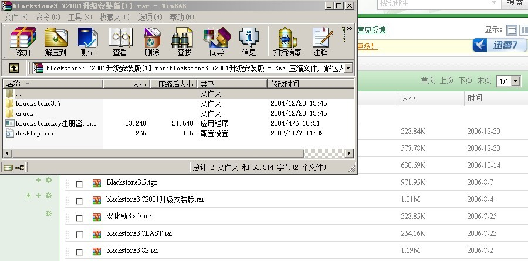

无错版的黑石3.7
#1 无错版的黑石3.7 作者：小丸.net 发表时间：2012-5-31 22:22:34
每次打开黑石3.7版的时候，会跳出一个错误对话框 ，而且退出时会显示一堆乱七八糟的乱码。。。。
现在有了这个版本的3.7，再也不会出现这个问题了，同时，测试了一下棋力，应该和最好的3.7版差不多。大家试试吧。。。猛击这里下载
crack目录下是破解文件 ，拷到安装目录下即可。。。。
#2 Re:无错版的黑石3.7 作者：黄药师 发表时间：2012-5-31 22:36:48
我的黑石严重出错，算出的点显示数值198+，结果是必败点！
#3 Re:无错版的黑石3.7 作者：aabb 发表时间：2012-5-31 22:46:24
看看是啥货色。。
#4 Re:无错版的黑石3.7 作者：极地剑客 发表时间：2012-5-31 23:20:44
其实弹出窗口正是由于这个破解补丁导致的，3.7老版和升级版都是这种破解方式。
楼主这个是3.7升级版安装程序，如果是固定在家使用，建议直接安装程序，然后杰出算号，不要用破解补丁。就没有弹窗了。
如果要制作移动版本，带着家里和上班或者网吧到处跑，那么安装后直接丢破解补丁进去，就变成绿色版本了。（目前网上流行的早期空恨论坛3.7就是这种方式）
还有个绿色单文件杰出做的也蛮流行，其实也是楼主这个程序+破解补丁+软件虚拟化技术打包的。
#5 Re:小丸.net【==无错版的黑石3.7==】 作者：极地剑客 发表时间：2012-5-31 23:42:53
上传个保存在网盘的截图，时间是2006年。自己还放了个杰出注册机进去
#6 Re:无错版的黑石3.7 作者：梧桐风 发表时间：2012-6-1 0:32:30
 我感动天感动地，极地终于没有说MM了~~~~~
我感动天感动地，极地终于没有说MM了~~~~~
#7 Re:梧桐风【==Re:无错版的黑石3.7==】 作者：极地剑客 发表时间：2012-6-1 2:07:09
引用：
原文由 梧桐风 发表于 2012-6-1 0:32:30 :
 mm这么晚还不睡啊
mm这么晚还不睡啊
#8 Re:无错版的黑石3.7 作者：小丸.net 发表时间：2012-6-1 8:30:03
极地MM，你发个大图会死啊。。。。#9 Re:小丸.net【==Re:无错版的黑石3.7==】 作者：极地剑客 发表时间：2012-6-1 8:39:19
引用：
原文由 小丸.net 发表于 2012-6-1 8:30:03 :
极地MM，你发个大图会死啊。。。。
丸子mm，俺也不知道怎么用自带上次，图片那么小啊，估计因为是qq截图吧
#10 Re:小丸.net【==无错版的黑石3.7==】 作者：极地剑客 发表时间：2012-6-1 8:48:39
这个图大点不#11 Re:无错版的黑石3.7 作者：形象哥 发表时间：2012-6-1 13:05:57
下载下来了,不会用......